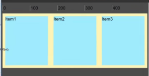
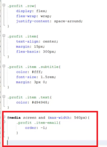

Статья представляет собой конспект вебинара Дмитрия Лаврика о Flexbox и верстке по сетке.
Во flexbox идет выравнивание по двум осям. Главная ось может быть «развернута» в четырех вариантах.
flex-direction: row; (по умолчанию). Является аналогом float: left;
flex-direction: row-reverse; Является аналогом float: right;
flex-direction: column;
flex-direction: column-reverse;

В отличие от использования float: left или float: right, во flexbox есть выравнивание по ДВУМ осям.
Когда прописываем float: left, все элементы тупо прижимаются в левому краю. Используя flex можно делить пространство поровну или выравнять по центру. Так же можно гонять элемент по вертикальной оси (сверху, снизу, по центру). Т.е. у нас есть две оси, на одну ось мы элементы «нанизываем». По второй оси элементы гоняем.
Для лучшего усвоения, рассмотрим примеры на практике с использованием генератора.
Как использовать flexbox? В начале для родительского элемента должны прописать display: flex.
Свойство justify-content выравнивает элементы по главной оси: flex-start — ближе к началу оси; flex-end — ближе к конце оси; center — по центру; space-around — все расстояние между элементами будет делиться поровну; space-between — тоже поровну, но прижаты к левой и правой границе.
За поперечное выравнивание отвечает два свойства:
align-items показывает как надо выравнивать все дочерние элементы (по умолчанию stretch)
align-self выравнивает конкретный дочерний элемент.
Если размер родителя не задан, то он будет высчитан относительно размера максимального элемента.
Свойство flex-wrap: wrap задает, что родительский элемент может создавать больше одной строки(по умолчанию одна строка).
Свойство flex-basis задает базовый размер элемента.
Без flex-wrap: wrap элементы хоть и имеют базовый размер, но не борются за место. Элементы сжимаются при уменьшении экрана.
Когда есть flex-wrap: wrap, т.е. когда родительский элемент может создавать больше одной строки, то дочерние элементы начинают бороться за ширину и не сжимаются.


Т.е. получаем адаптивку. При чем адаптивку без использования медиа запросов. Просто добавили 4 строки:
У родительского элемента
display: flex;
flex-wrap: wrap;
justify-content: space-around;
У дочерних элементов:
flex-basis: 300px;
Как рассчитываются размеры flex элементов? Есть три параметра:
flex-grow — «жадность» к пустому месту (не к всему месту, а именно к пустому). Значения могут быть 0, 1, 2… чем выше, тем больше забирает места у соседних элементов. Т.е. делят свободное место по пропорции;
flex-basis — желаемый (охраняемый) размер;
flex-shrink — это сжимаемость элементов (от 0 и выше). На практике чаще используется два значения: 1 или 0. Если flex-shrink: 0, то элемент несжимаемый.
Если flex-basis: auto, то ширина элемента задается по контенту (на практике используют не часто). Если мы сделаем flex-grow: 1; и начнем сжимать окно, то на новую строку элементы перенесутся, когда контенту в элементе не хватит ширины
В адаптивной верстке это будем смотреть не красиво. Поэтому таким элементам на практике выставляется конкретное значение свойства flex-basis, за которое они будут бороться.
Начали сжимать…

сильнее…
еще сильнее.
Если мы зададим flex-grow: 0 и установим у дочернего элемента конкретное значение flex-basis, то изначально данный элемент и будет занимать ширину, указанную в flex-basis.
Бывают ситуации, когда при адаптивной верстке нужно изменить порядок вывода дочерних элементов. Например на большом экране порядок такой Телефон — Email — Адрес. А на смартфоне нужно Email — Телефон — Адрес. В таких случаях нужно использовать media запрос со свойством order: -1. Элементу, который должен стоять не по порядку, добавляем класс (в данном случае .item-email).

А теперь покажем проблемы при работе с flexbox. Допустим разместим 4 дочерних элемента и начнем сжимать экран. Один элемент «соскочил», вместо двух.
И что делать?
Усложненный способ, это сделать пару оберток (.item-pair) и пару display: flex вложить в основной (.row)
Проблема вроде решена. А если теперь разместим еще дочерних элементов? Проблема такого подхода, что мы не знаем сколько будет товара и если продолжать делать вложенные обертки, то замучаемся. Для оптимального решения нам всё же потребуются медиа запросы (чтобы не писать кучу вложенностей).
Далее вопрос с версткой по сетке. Например Bootstrap 3 сделал сетку на float’ах, а не на flex’е. Может возникнуть ситуация, когда у элемента длина текста больше, чем у соседних. На Bootstrap 3 это выглядит так
Т.е. float’ы в чистом виде проблему не решают. Чтобы решить проблему, прийдется после второго дочернего элемента вставить <div class=»clearfix visible-md-block»></div>.
Теперь нас просят сделать элементы меньше. В итоге они становятся не по центру
Теперь первому и третьему элементу нужно дописать класс смещения col-md-offset-1 и они становятся по центру. Возвращаемся к большому экрану и видим вот это

Теперь для больших экранов нужно offset сбрасывать (col-lg-offset-0). В итоге в коде у нас вот такое количество подключенных классов
А если экранов больше? Пишем столько классов, сколько экранов.
Что делать? Можно media запросы писать в ручную.
Логичней было бы в div указать один класс (у каждого элемента), а в css у этого класса разместить размеры колонок и прочее выравнивание. Данную проблему решает smart-grid. Вебинар по подключению и работе в smart-grid лежит в этой статье.
Смысл такой. Мы генерируем библиотеку smart-grid.less, импортируем в наш проект (в less файл). Вызывая примеси .row-flex(), .col-6() и т.д. происходит генерация media запросов в css файл.
Небольшая схема работы описана ниже
Чтобы верстать, используя smart-grid, нужно знать:
1) Flexbox
2) Один из препроцессоров (LESS или SCSS). Нужен, чтобы вызывать примеси
3) Сборщик проектов GULP (идет из Node.js) оптимизирует media запросы так, чтобы не было напряжно для браузера